Яндекс Карты + Погода
Исследование влияния погодных условий на навигационные сценарии и интеграция погодного контекста в Яндекс Карты
- Тип
- Роль
- UX/UI-дизайнер
- Период
- Зима 2025 – весна 2026
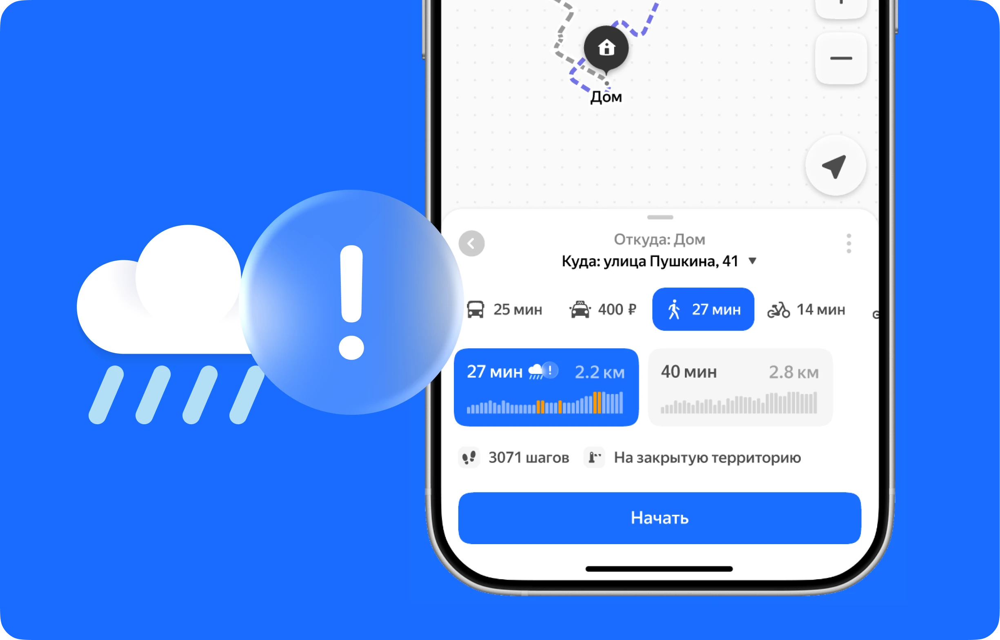
1 спринт — Определение проблемы
«Пользователи часто сталкиваются с препятствиями, когда решают свои задачи. Продукт должен помогать справиться с ними» — факт. Таким препятствием, например, может оказаться погода 🌧
Цель и план работы
Исследовать, как погодные условия влияют на поведение пользователей (и влияют ли вообще), и понять, каким образом этот контекст можно встроить в пользовательский опыт Яндекс Карт.
Работа проходила в несколько этапов:
Командный. Я и ещё три дизайнера объединились в исследовании пользовательского опыта: мы проводили глубинные интервью и определяли проблемы пользователей карт.
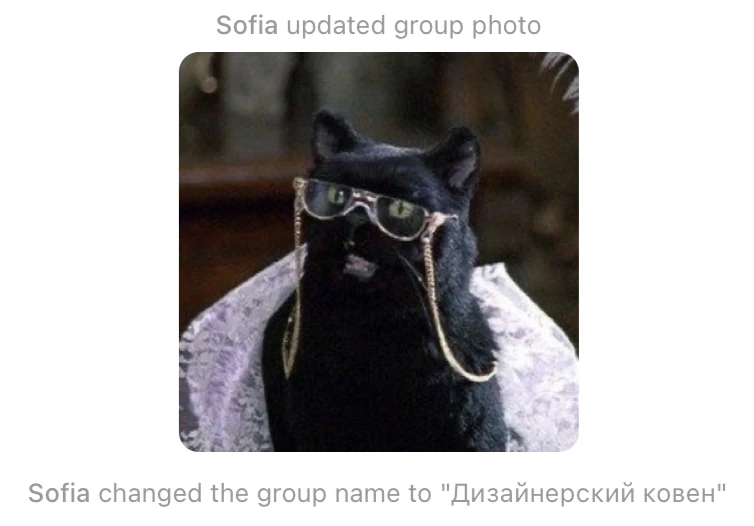
После этого я продолжила работу самостоятельно — анализировала интервью, сформулировала инсайты и гипотезы, спроектировала концепцию решения, создала кликабельный прототип и дополнительно пообщалась с респондентами.
Исследование
Предположения:
- погода влияет на выбор маршрута и транспорта
- пользователям может не хватать погодного контекста во время построения маршрута
- погодные рекомендации могут помочь принимать более осознанные решения в пути
Для проверки гипотез были проведены интервью с пользователями разных сценариев передвижения: пешеходами, водителями и людьми с регулярными городскими маршрутами.
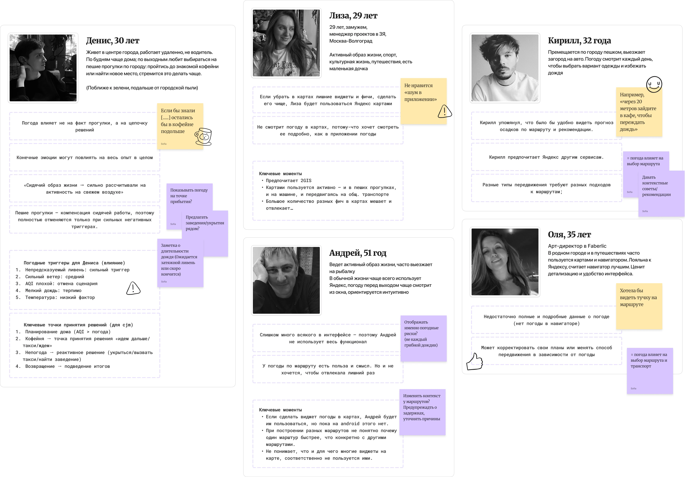
Инсайты
Погода редко влияет на сам факт выхода из дома
Она влияет на другое:
- выбор транспорта
- время выхода
- подготовку к поездке
Полный прогноз перед маршрутом смотрят далеко не все
Для привычных поездок большинство ориентируется на ситуацию «здесь и сейчас», а не открывает погодное приложение.
Во время построения маршрута пользователь думает прежде всего о времени, стоимости и удобстве
Погодный фактор становится важным только тогда, когда способен изменить одно из этих решений.
Формулировка проблемы
Навигационный сервис помогает выбрать оптимальный маршрут, но не учитывает погодный контекст, который может повлиять на выбор транспорта, время выхода или комфорт поездки.
Приоритетная гипотеза
Мы предполагаем, что:
интеграция погодных сигналов в контексте маршрута
повлияет на увеличение осознанных действий пользователей (смена маршрута, выбор альтернативного транспорта, вызов такси) и снизит фрустрацию от задержек из-за погоды,
для людей, строящих маршруты в условиях ухудшающейся погоды (особенно пешком, на велосипеде/самокате),
потому что приложение будет предупреждать о влиянии погоды на маршрут в понятной форме («+X мин», «лужи на дорогах», «рекомендуем транспорт»), повышая осведомлённость.
Предупреждение о погодном риске (активном или вероятном) может склонить пешехода вызвать Такси (+Транзакция) ради комфорта или воспользоваться Метро (+Активность в сервисе Транспорта).
Решение
Погодные подсказки встроены в сценарий построения маршрута и отображаются при наличии погодных рисков на пути.
Это дополняет навигацию, не меняя привычный сценарий взаимодействия с картами.
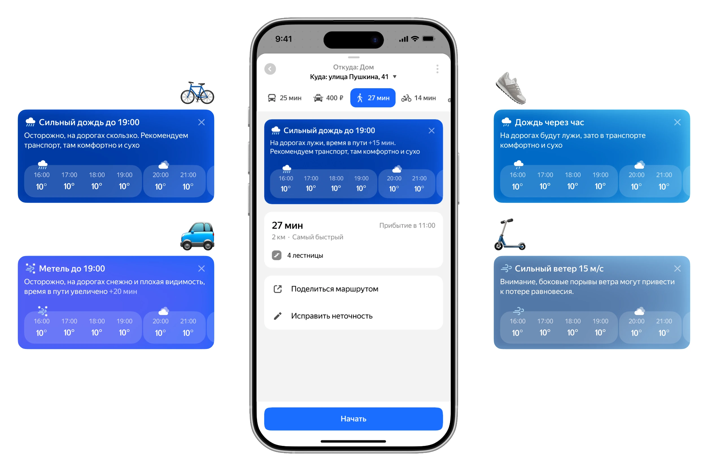
Подсказки не отвлекают от основного функционала — лишь показывают, как это может отразиться на маршруте.
User Flow
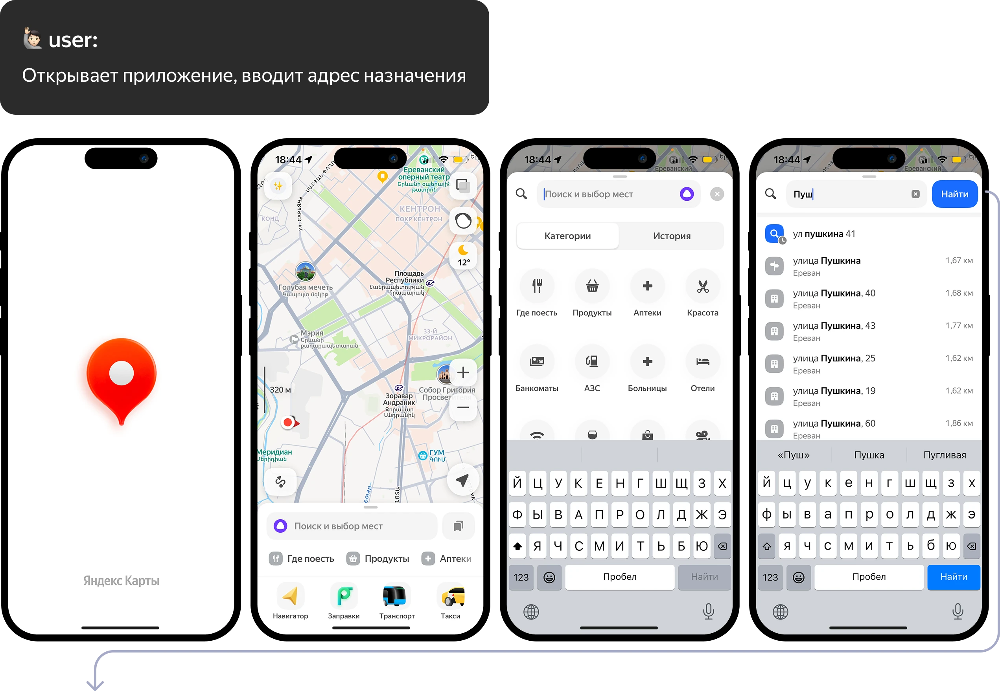
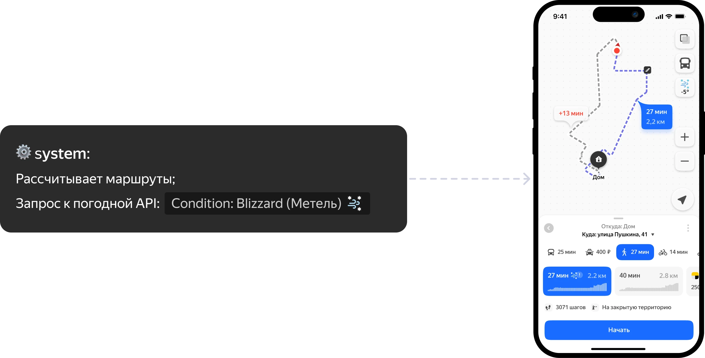
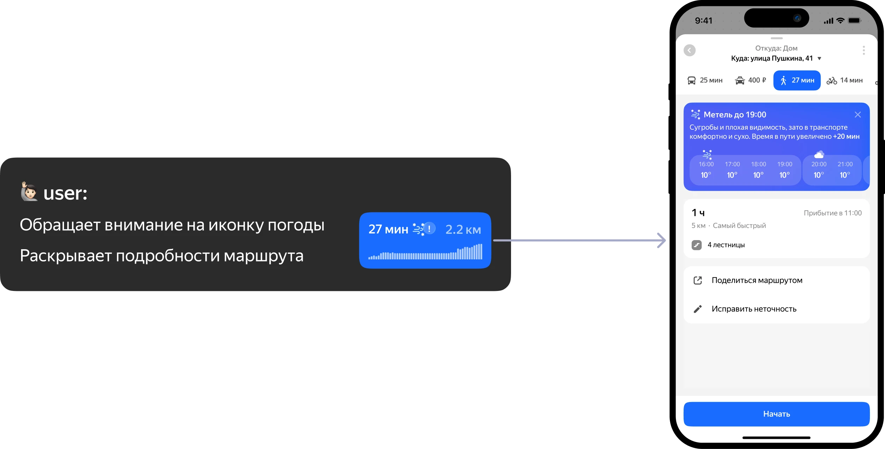
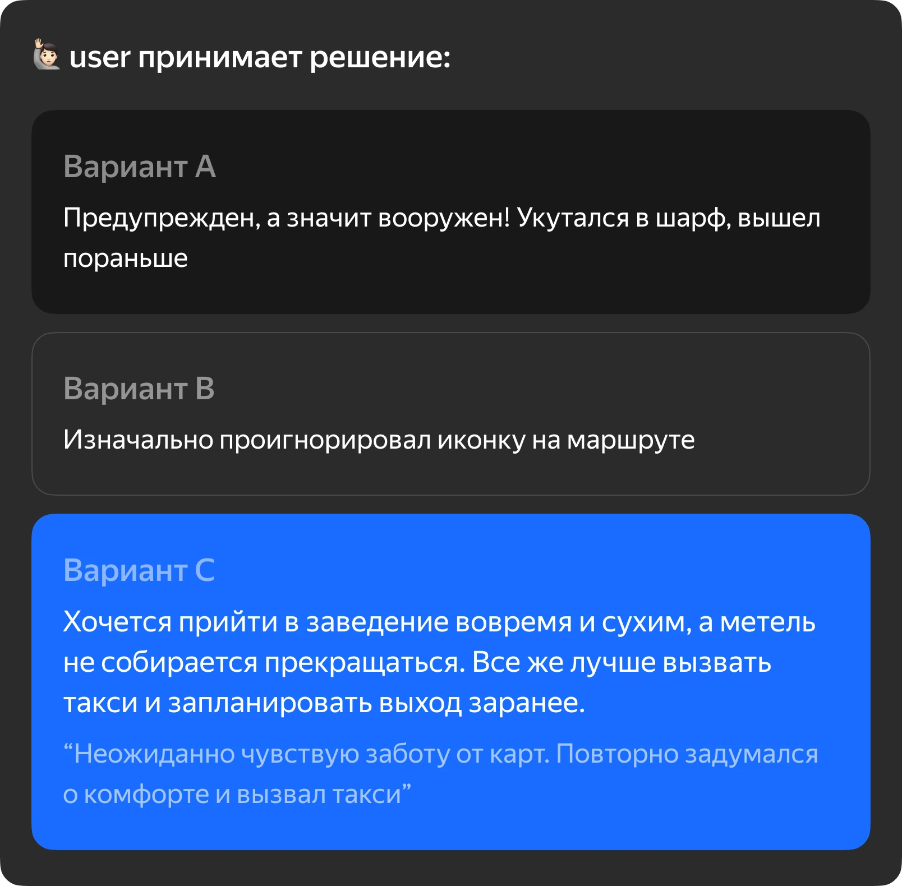
Примеры сообщений
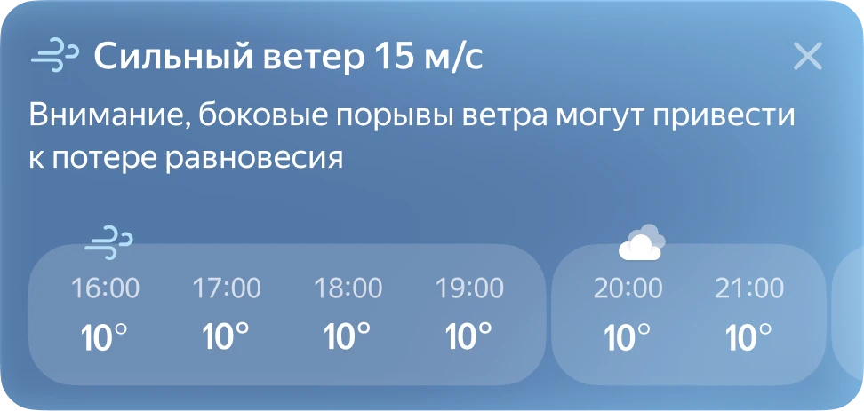
Пожалуй, сегодня без самокатов, доеду на метро... Опыт падений есть, больше не надо
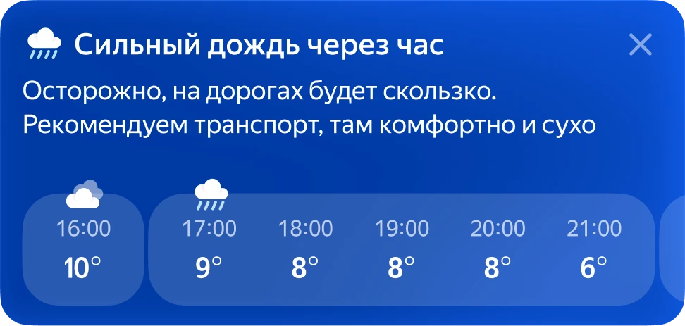
Лучше потороплюсь домой, не хочется попасть под дождь на велосипеде
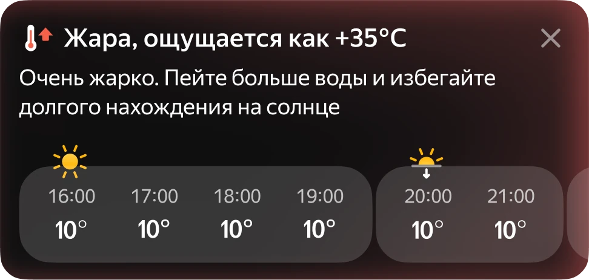
Не буду выходить сейчас, пережду пик жары в кофейне, потом для поездки выберу такси с кондиционером
Юзабилити-тестирование
Когда была готова первая версия макетов, я создала кликабельный прототип, чтобы показать его респондентам. Им удалось потыкать, а мне — понаблюдать и получить их комментарии.
Памятка для тестирования: вопросы и критерии успеха
Исследование
Модерируемое юзабилити-тестирование (Think Aloud / «мысли вслух»). 4 респондента (3 женщины, 1 мужчина) в возрасте 16–45 лет, активные пользователи Яндекс Карт (хотя бы 3 раза в неделю), использующие разные виды транспорта.
Гипотезы
Пользователи обращают внимание на иконки погоды в превью маршрутов.
Пользователи понимают, что график в баннере — это прогноз на ближайшие 6 часов.
Контекстные сообщения (про комфорт в такси или лужи для пешеходов) влияют на выбор способа передвижения.
Кнопка перехода в Яндекс Погоду в конце таймлайна считывается как логичное продолжение сценария.
Задачи и вопросы
«Задача: доехать до работы. Выбери самый подходящий вариант маршрута. Объясни свой выбор».
«(Пользователь обратил внимание на иконку) Как ты думаешь, когда дождь закончится или станет слабее? Можешь ли ты узнать прогноз на завтра? Нужно ли это тебе?»
«Покажи, как ты обычно строишь маршрут. Что влияет на твоё решение?»
Критерии успеха
Пользователь заметил иконку/бейдж или открыл без подсказки.
Пользователь верно интерпретировал влияние (включая +N).
Пользователь изменил маршрут или сознательно решил не менять маршрут — и объяснил почему.
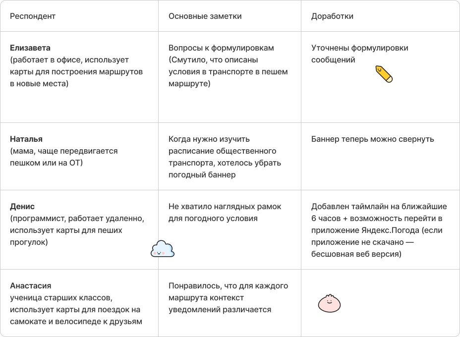
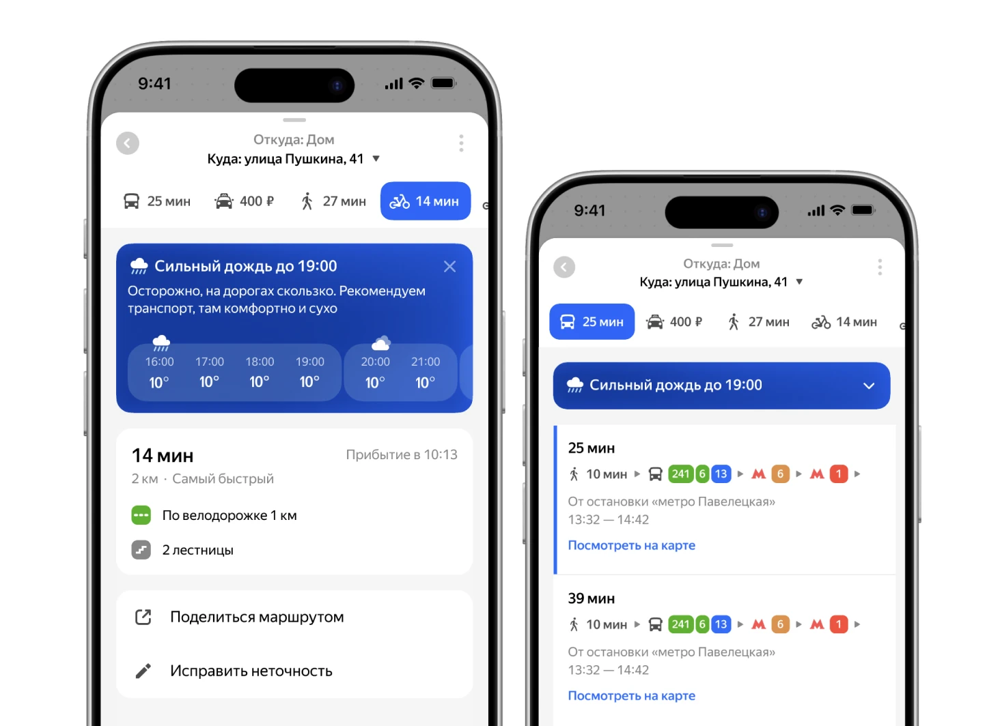
Дизайн-спецификация
Последним шагом стала подготовка макетов к передаче в разработку: в Figma я создала спецификацию, где подробнее описала задумку и компоненты разработчику.
А ещё увлеклась и продумала варианты текста для каждого условия и транспорта.
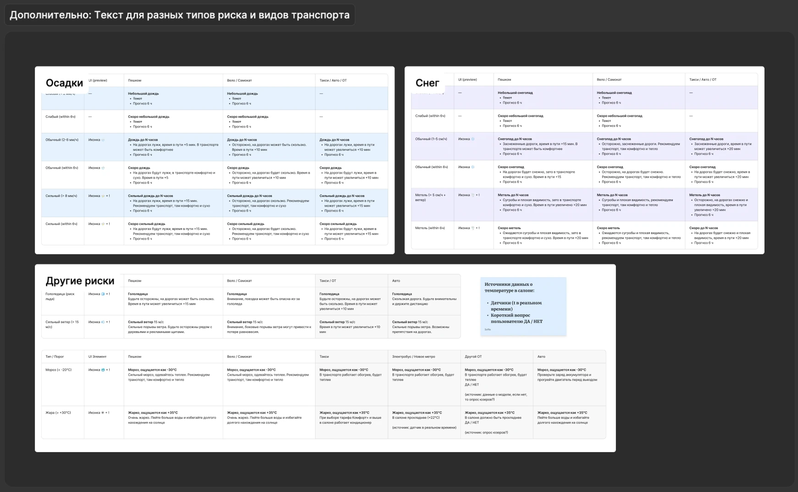
Заключение
Этот проект стал для меня возможностью пройти полный цикл работы над продуктовой задачей.
Думаю, главный вывод, который я забрала с собой после этого проекта, — иногда ценность новой функции не в том, чтобы её заметили, а в том, чтобы она естественно стала частью уже привычного сценария.
Вернуться в портфолио